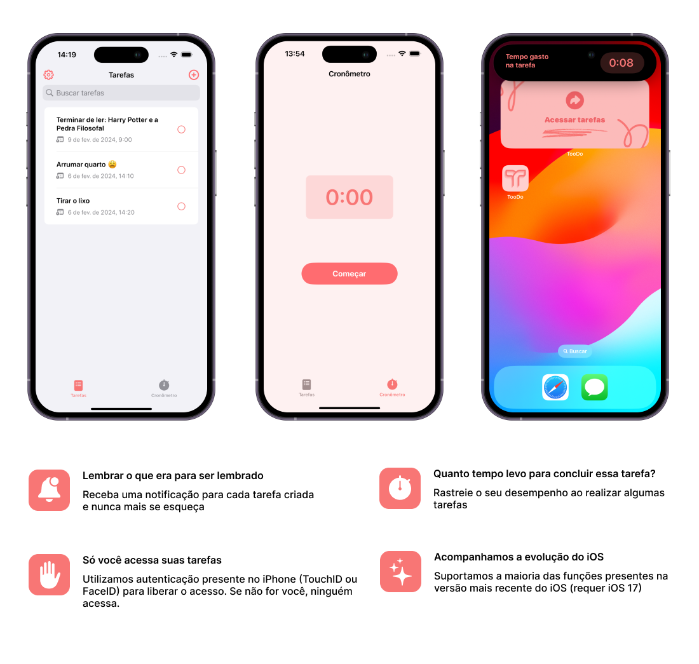

Rastreie suas tarefas diárias de forma simplificada
Crie tarefas, seja avisado quando elas estiverem vencendo e acompanhe o tempo gasto em cada tarefa
Funcionalidades
Mais simples que seu app de lembretes ou agenda
Anotar lembretes ou tarefas em diferentes lugares só piora seu desempenho no dia-a-dia. Com o TooDo
você consegue centralizar todos os seus lembretes e tarefas em um único app.

Quem está por trás?
Um app que você pode confiar
TooDo faz parte do conjunto de apps desenvolvidos por uma pessoa de verdade que quer ajudar pessoas como você a melhorar seu dia-a-dia.